這裡外頭養的雞比較少，所以早上咕咕鐘齊鳴的威力就減少很多。
睡到還沒六點就起床了，打開門伸懶腰的時候，看到老闆戴著黃色安全帽，正準備要出門上工。
我趕緊先把住店的十塊給他，再跟他拿一壺熱水，等等又可以裝滿一整天要喝的水壺。
先收拾睡袋，然後照慣例檢查小多身上的螺絲和貨架有沒有問題，然後把輪胎的氣打滿。
每天早上都這樣子弄的話，雖然六點還不到就起床，但出發的時間都是七點多，還是有點太晚了。
希望可以漸漸養成四點多起床的習慣，然後還沒六點就出門，這樣一大清早涼快多了。
不然在大太陽下騎一整天的車，今天差點就被曬到中暑~_~
一大早先在晨曦和冷冽的空氣中，在露天衛生間拉一坨屎，
人的基本需求，吃、喝、拉、撒、睡，其實也可以像這樣很簡單就解決掉。
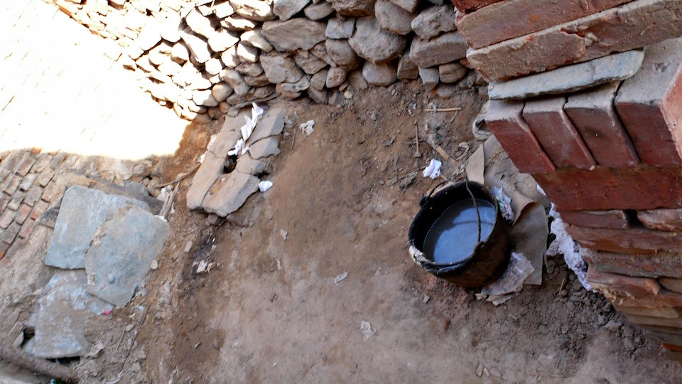
出發後大概半小時，我就吃昨天在家家福便利商店買的餅乾當早餐，
吃掉這一包之後，我的緊急存糧(應該稱呼為零嘴比較適當)又歸零了。
半小時後在一間『東興副食批發』採買補給品，
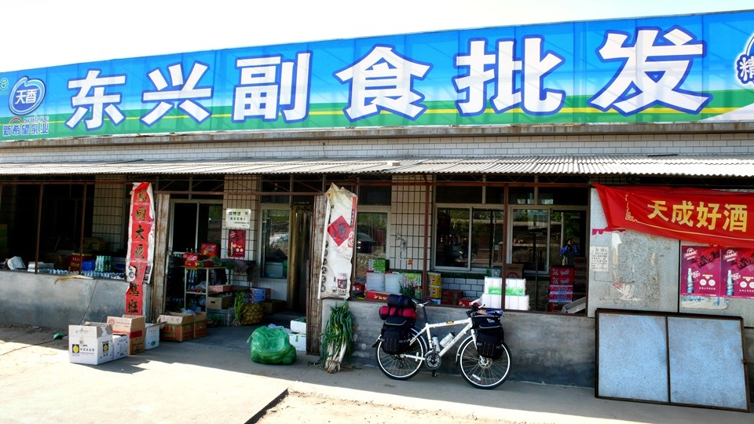
看到有像是胡桃餅的東西，問一下老闆娘這個怎麼賣？
『5塊。』
臉上馬上露出這也太貴了吧的表情，一個五塊？怎麼可能這麼貴，結果原來是一斤五塊。
中國東西大多都是秤斤秤兩賣的，那就拿四個，結果4塊錢，因為想喝牛奶，所以又買了兩包玉米牛奶，這個一包才1.5塊，
只要在紙包裝的角落咬一個小洞，就可以直接吸著喝，味道還真是好！
然後再買一包之前在小馬的店裡賣的小熱狗，小馬的店賣一隻一塊錢，那時候我覺得怎麼這麼便宜，
而且這個小熱狗還挺好吃的:D 在這邊一次買一小包，裡面有八隻，價錢更便宜，只要五塊錢。
算一算一共是12塊，拿了一張一百元的，換了88塊的零錢回來，又可以讓我玩樂好幾天(心)
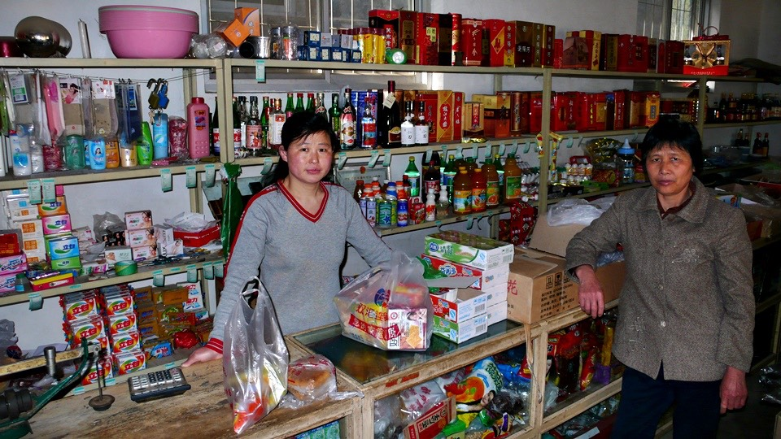
早餐就在單車上解決，一邊騎車一邊喝玉米奶、吃胡桃餅，今天想要趕一點路，
因為從北京一出發，就來個大迷路實在有點糗，所以想要從易縣騎到淶水然後再騎到高碑店，目標希望可以一天就騎到保定。
這樣子整體來看的話，大迷路的影響也只有行程延後一天而已，
迷路有迷路的樂趣，山裡的景色那麼漂亮，多繞點路雖然爬坡很辛苦，但真的很值得。
今天上午一路這麼騎，都是大馬路，配著道路兩旁的商店，或是一整片的農地，
路雖然平坦得很好騎，速度很快，但總覺得有點疲憊。
本來計畫下午才會到的高碑店，居然在早上十點半就到了，整個很高速在騎乘。
到了高碑店應該要放鞭炮慶祝一下，因為我從北京出發應該要騎的國道107，現在終於正式的接上了！
沿著這國道107，一直往南騎，會經過幾個大城市，然後拐個彎就可以到西安去了。
我計畫用兩個星期的時間從北京騎到西安，看起來可以很悠哉的騎了。
接到國道107之後，路整個給他很大一條，這大概單邊就有五線道吧。
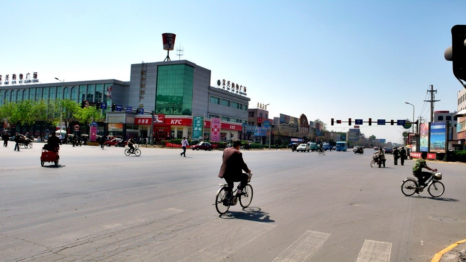
但是卡車也稍微多了一點，而且這裡開車的人，都是用鳴喇叭的方式來講話。
依照喇叭聲響亮的程度和叭的頻率，可以分為
『前面的烏龜給我讓開！』
『長眼點，大爺要開車經過了。』
『幹什麼騎單車在這晃來晃去，吃飽撐著是吧？』
『嗨～你好呀～』
沒錯，還有打招呼用的喇叭聲，雖然相較那些大卡車而顯得親切些，但是騎到一半就被叭一下，
還是覺得有點不爽，所以現在只要被叭喇叭的話，
我握著單車手把的左手，都會很自然的把中指給伸的筆直，算是禮尚往來的問候。
半路上還看到中國的軍隊在移動，直接就開著坦克車、裝甲車還有飛彈發射器在路上跑。
一口氣就是十幾輛這樣的重裝武力開過去，整個國道都為之震動。
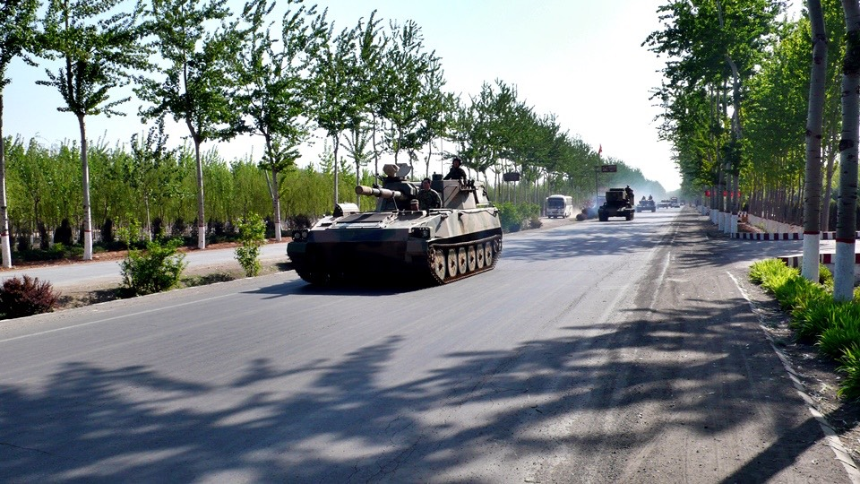
都市的十字路口，不知道和剛剛軍隊經過有沒有關係，
都是2~4人一組的阿兵哥，站在路中間罰站曬太陽，看起來也不像在指揮交通，就這樣傻傻的站著，還有點可憐，
因為太陽真的很大，我自己都快被曬得頭昏眼花了@"@
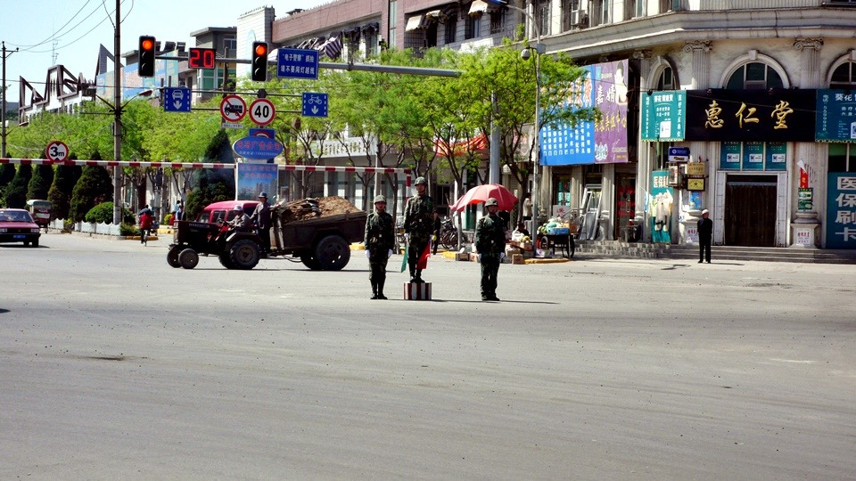
現在的太陽大到，只要我稍微停在路邊休息一下，將屁股移開坐墊10秒鐘，然後再重新坐上去，
那椅墊就像是被拿去加熱過一樣，一坐就整個熱呼呼的，根本就是在幫屁股做熱敷。
正午十二點整，我有點水分被蒸發乾的感覺，明明就一直有在喝水，還喝了兩包玉米牛奶，怎麼還感覺這麼渴呢？
看到一個賣水果的小販，吃東西都是看感覺，一路上這麼多小販，就覺得這一家比較有共鳴，
所以停下車來，將小多牽到陰涼的地方靠著休息一下。
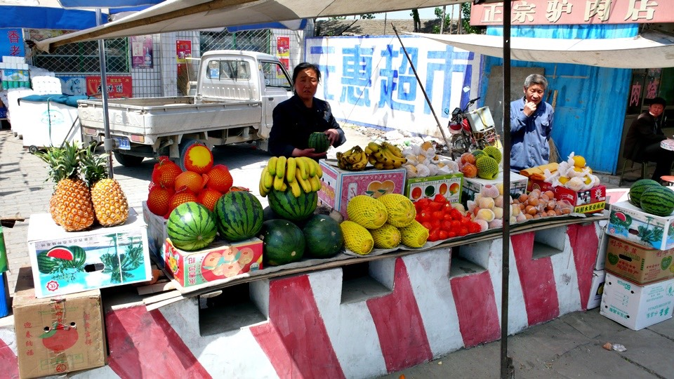
挑了一顆西瓜，老闆還特別說這是黃色的唷，我沒差，黃的紅的我都吃。
請老闆現切，我要在這邊現吃，用水果來補充水分。
秤過重之後是三斤三兩，一顆西瓜九塊錢，在台灣這價錢差不多只可以買一杯西瓜汁。
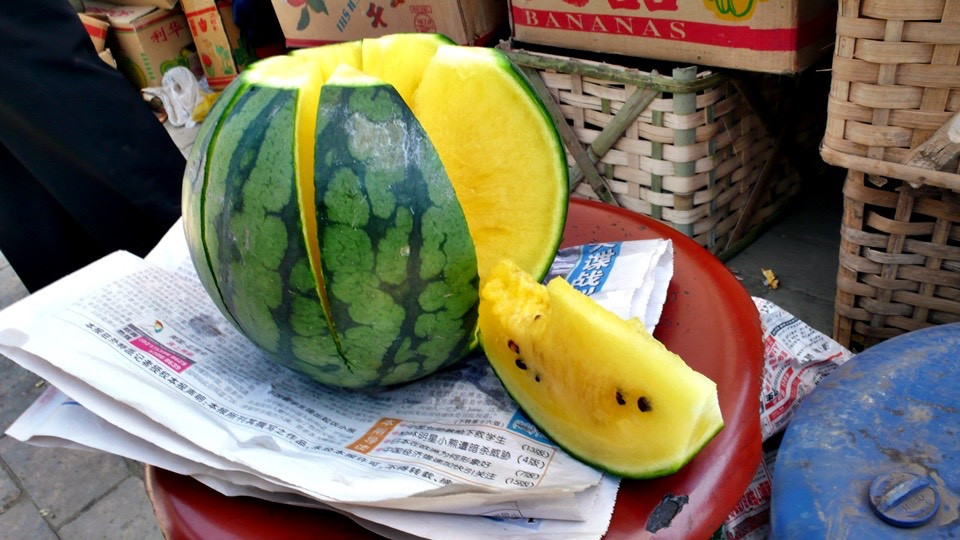
老闆娘拉張椅子叫我坐這吃吧，有大陽傘幫我擋太陽真是舒服。
一個人慢慢的嗑掉一整顆西瓜，這樣應該能補充不少水分吧？
吃完西瓜到隔壁的攤子借個水洗把臉，這邊賣吃的地方，都會有個臉盆和毛巾讓人吃飯前先洗臉洗手，
我不敢用那個毛巾來洗臉，所以就舀些乾淨的水，呼嚕呼嚕的把臉搓一搓，清爽多了。
看到老闆在做餅下去烤，我問這餅裡頭有沒有包餡呀？
結果是包一種叫做『驢肉火燒』的肉，切成細細碎碎的，把餅扒開，然後驢肉餡放裡頭，
看其它人吃好像很好吃的樣子，我就跟著買了三個當午餐，一個只要一塊錢，實在有夠便宜。
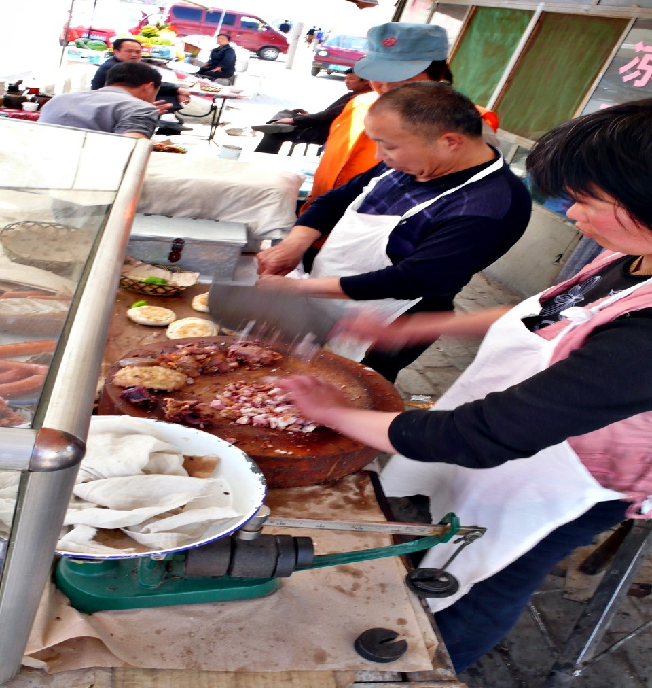
每次我吃飯，都會被問要不要喝啤酒？這邊的啤酒很便宜，兩塊或是三塊就有一大瓶，也蠻順口好喝的。
但是因為今天需要趕點路，所以也沒時間坐下來慢慢吃。
跟早餐一樣，我的午餐也是在單車上解決，邊騎車邊吃驢肉火燒的餡餅，
那肉吃起來有點像是臘肉和叉燒肉的綜合體，肥瘦相間，汁多味美，
咬一口就喜歡上了，而且價錢也很便宜，真想折返回去再多買幾個。
就這樣一整天幾乎沒什麼休息，一直騎到中午十二點五十分，我突然有一種頭暈噁心的感覺，
好像被用強力橡皮筋把頭勒緊，然後用一堆熱呼呼的棉花把頭包住那種感覺。
猜想我大概是有一點中暑了，剛好路邊有一間很大的加油站，不逞英雄，躲到裡面陰涼的地方，
把外套脫掉，頭巾拿掉，眼鏡也拔起來，衣服拉鍊拉開，
攤在樓梯口乘涼休息，有個員工跑出來看，問我是幹嘛的？
我說休息一下躲個太陽，他也沒什麼搭理我。
一坐下來就暈暈的想睡覺，扶著單車稍微瞇了一下，休息一個小時，睡醒感覺就正常多了。
下午兩點太陽沒那麼毒辣的時候，小腿和脖子臉頰塗上防曬油，才又再出發。
騎沒多久居然看到收費站？
我是迷糊不小心跑到高速公路了嗎？怎麼會有收費站呢？
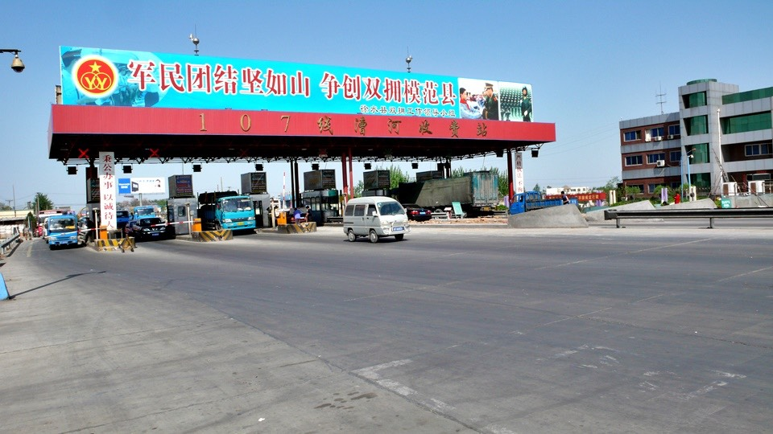
結果只是一般的國道也要收錢，還好腳踏車是免費的，過了收費站，買一瓶冰涼的飲料慰勞一下大太陽的辛苦，
買一罐我以為是可口可樂的東西，至少它喝起來就是可樂，一瓶2.5塊錢。
等我喝了大半罐，仔細看包裝才發現原來這是『非常可樂』，英文叫做『Future Cola』，
這麼說中文名稱還是音譯來的~_~，這可樂是『娃哈哈』公司出品，
我敢發誓我說的話全部都是真的，不然我這輩子就再也喝不到真正的可口可樂。
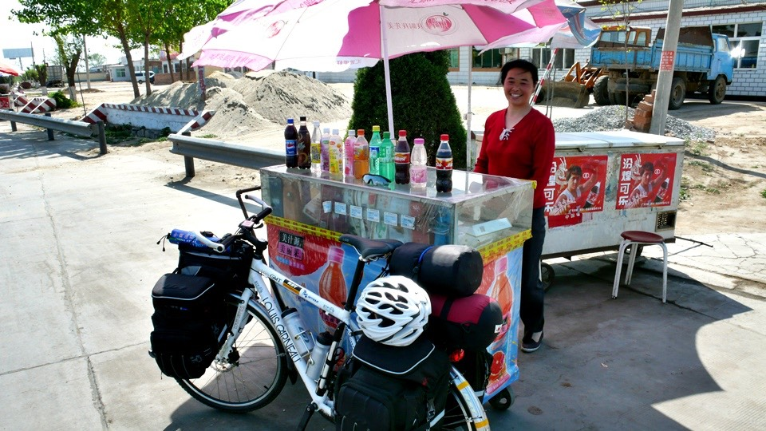
沿著107國道騎乘，我不敢再亂跑去別的地方了，就這麼一路平安的往南騎吧。
下午四點半的時候，看到一個八歲的小女孩在門口寫功課，就決定這間旅店就是我今天住的地方，
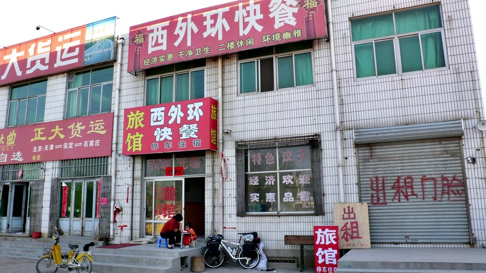
一晚上20塊錢，房間比起昨天的要好上太多太多了，
這看起來就像是一般正常的旅館，棉被什麼的也很乾淨。
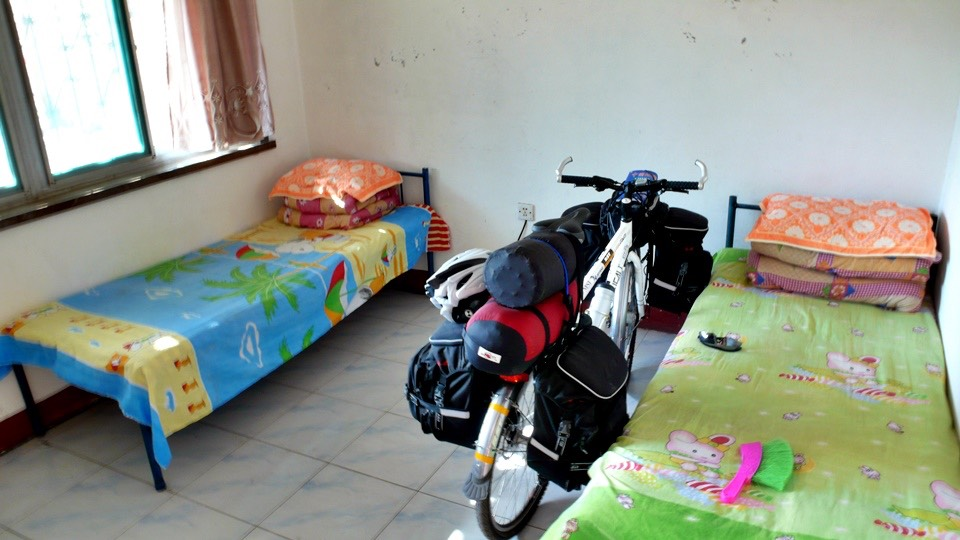
因為今天很快就找到過夜的地方，但是時間還很早，
所以我就把穿了三天的髒外套、髒短褲、髒排汗衣、髒頭巾、髒手套和髒襪子全部都拿到後院去洗一洗。
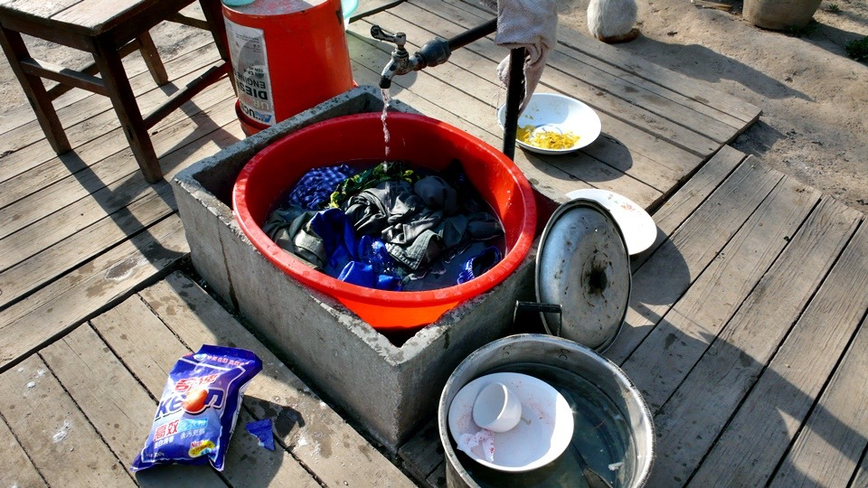
老闆娘給了我一個紅色的大盆，水龍頭扭開就有水，旁邊還有強效洗衣粉，這樣我的肥皂就可以省一點用了。
衣服洗完也趁著還有太陽掛起來曬。
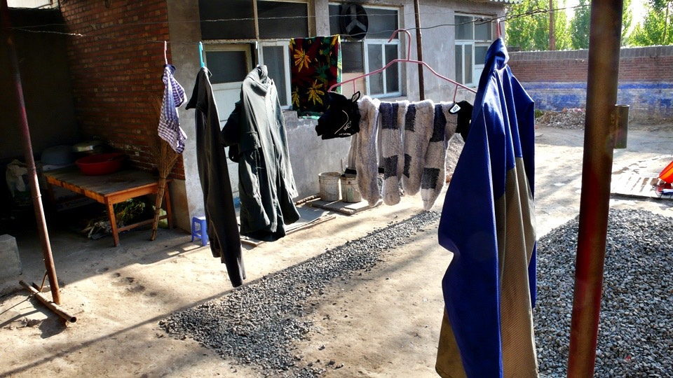
我自己也在這邊放了半盆的清涼井水，用毛巾和肥皂把頭髮和身體都洗一洗、擦一擦。
騎車旅行第三天，好不容易有一種洗盡風塵的感覺。
在我住店後沒多久，有個騎單車的大叔也來住店，
他姓楊，是重慶人，從重慶騎單車準備要去北京，
他只花了十五天就騎了一千九百公里，問了一下他多大歲數，居然已經六十歲了 XD
這大叔整個也太有元氣了吧！
看了一下他的單車，行李簡單到不行，一個水壺打個洞插一隻吸管，後坐放兩包東西，
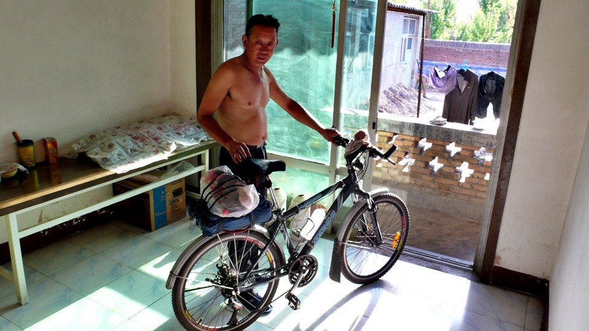
它的輪胎都是破了再補、補了再破，一條內胎不知道破了多少個洞了，還是繼續再用。
這樣也是上路騎了快兩千公里。而且明天他就要騎到北京去了。
他只要一天就可以從這邊騎到北京，
這我怎麼好意思跟他說我從北京騎到這邊花了三天的時間 Orz
整理完東西，跑去外面問有沒有什麼東西可以吃，老闆娘說要過街到馬路另一邊去，
因為我只穿了短褲跟無袖汗衫，在外面跑來跑去很冷，剛出大門就看到門口擺了一個嶄新的『燒烤』的紅色招牌。
『我吃這就行了～！』跟老闆娘各點了一份串燒，
一共有串燒熱狗、串燒豬肉、串燒羊肉、串燒牛肉、串燒雞心、串燒肉皮，
全部都灑了很香的孜然粉，吃一小口就胃口大開。
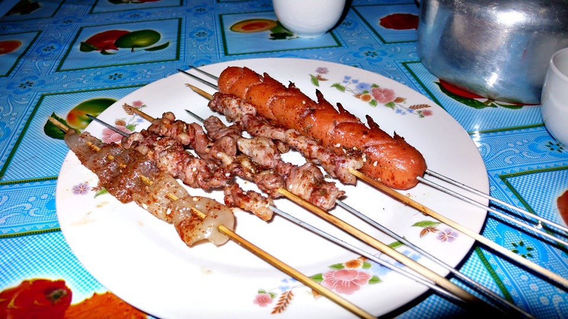
老闆娘說今天是他們試賣，明天才開張，本來是自己烤著好玩來吃的，沒想到我喊著要吃，
所以就變成第一個客人了，因為整個很好吃，所以我又加點了兩份串燒豬肉、兩份串燒羊肉、
兩份串燒熱狗，因為吃不太飽，所以老闆又拿出了串燒饅頭，
想不到連饅頭都可以烤XD
但是烤的酥酥的，灑上孜然香料和辣胡椒粉，很好吃，也終於填飽了我的肚子。
因為很好吃，所以一時得意忘形點了太多，等我回過神來東西已經通通都在我的肚子裡了~_~
這下這頓飯不知道要多少錢才能買單？
『七塊五，算你七塊行了。』
有沒有搞錯>"<是不是這麼便宜，我吃了這麼多燒烤耶，這樣你們明天開張不會賠本嗎=..=
挺著圓圓的肚子，喝點熱茶，等會刷完牙，今天早早就可以睡覺了，早點找到過夜的地方真是一件美妙的事情。
繼續閱讀：4.26 吹得我都睜不開眼了~_~
中國-人民幣－ 1：4.3 台幣
4.25
總計：53.5元
雜貨店玉米牛奶兩包3元、胡桃餅四片4元、熱狗一包5元、三斤三兩種的西瓜9元、爐肉火燒餡餅三個3元、非常可樂2.5元、住店20元、孜然串燒晚餐7元